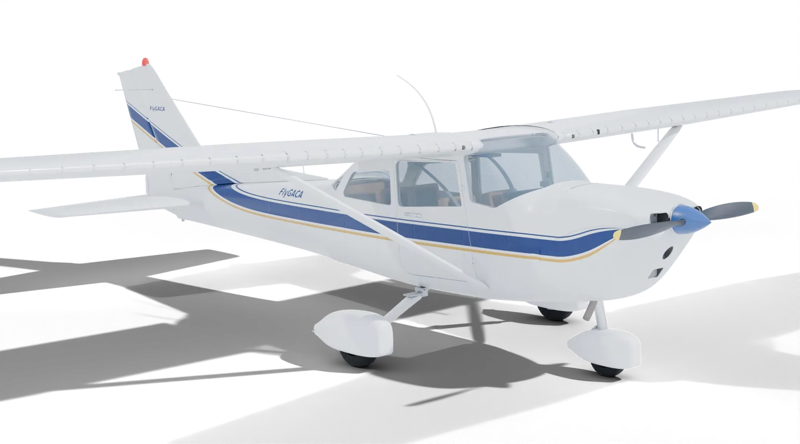

Exterior, engine, systemsالخارج والمحرك والأنظمة
The aircraftالطائرة
Turn it, open the cowl, explode the assembly, and select any part to read what it is.دوّرها وافتح غطاء المحرك وفكّك التجميع، واختر أي قطعة لتقرأ ما هي.
Fly GACA · Cessna 172N, 1979فلاي قاكا · سيسنا 172N، موديل 1979
An educational digital twin: the airframe, the cockpit and the engine, opened up system by system, and a flight model you can fly.توأم رقمي تعليمي: الهيكل والقمرة والمحرك، مفتوحة نظامًا نظامًا، ونموذج طيران يمكنك أن تطير به.

Exterior, engine, systemsالخارج والمحرك والأنظمة
Turn it, open the cowl, explode the assembly, and select any part to read what it is.دوّرها وافتح غطاء المحرك وفكّك التجميع، واختر أي قطعة لتقرأ ما هي.
Flight lessonsدروس الطيران
Each lesson is checked step by step against the handbook procedure.كل درس يُراجَع خطوة بخطوة وفق إجراء دليل الطائرة.
Cockpitالقمرة
Sit in the left seat: turn your head, lean, and work the controls and switches you can reach.اجلس في المقعد الأيسر: أدِر رأسك ومِل بجسمك، وحرّك أذرع التحكم والمفاتيح التي تصل إليها يدك.
Renders and figuresالصور والأشكال
Every part pictured on its own, in its place and in 3D, with the whole aircraft to move around and pull apart; renders of the model, and the figure atlas made for the handbook.كل قطعة مصوَّرة وحدها وفي مكانها وبعرض ثلاثي الأبعاد، مع الطائرة كاملة للتجوّل حولها وتفكيكها؛ وصور للمجسّم، وأطلس الأشكال المعدّ للكتاب.
What this model is, and is notما هو هذا المجسّم، وما ليس هو
The reference is a 1979 Cessna 172N in its factory-standard configuration, as an educational baseline; it is not a specific serial number. Every number in the flight model is labelled POH, POH-derived or estimated. The model has no certified fidelity. It is study material, not a flight training device, and not for flight.المرجع طائرة سيسنا 172N موديل 1979 بتجهيزها القياسي من المصنع، كأساس تعليمي، وليست طائرة برقم تسلسلي محدّد. كل رقم في نموذج الطيران موسوم بأنه من دليل الطائرة (POH) أو مشتقّ منه أو تقديري. المجسّم بلا دقّة معتمدة. هو مادة دراسية، وليس جهاز تدريب على الطيران، وليس للطيران الفعلي. The flight model and every numberنموذج الطيران وكل أرقامه
How the project got here. These are archived and are not the current aircraft.كيف وصل المشروع إلى هنا. هذه مراحل مؤرشفة وليست الطائرة الحالية.